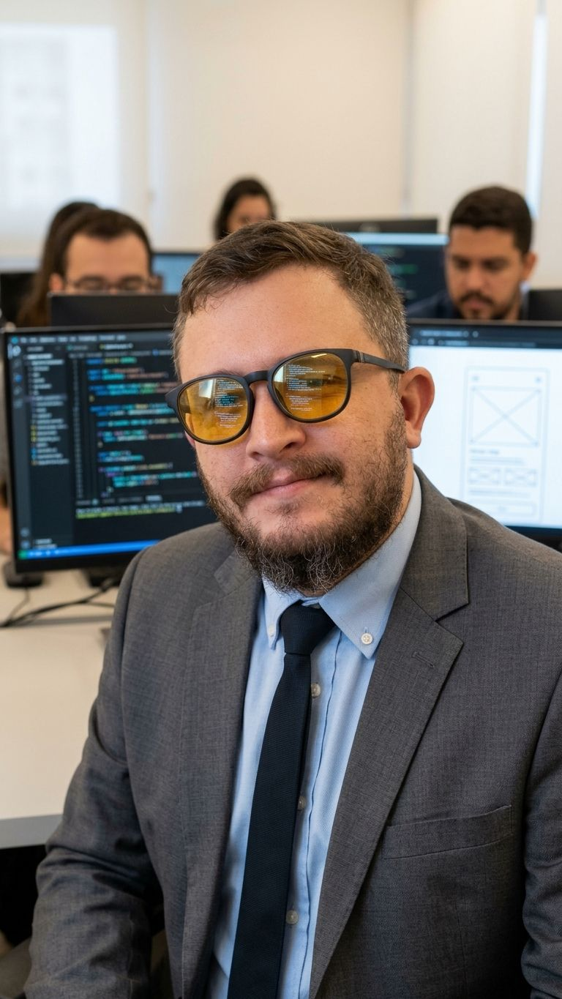

Quem é Luan?
Sou o Luan, desenvolvedor sob medida para pequenas e médias empresas. Eu faço o seu sistema fazer o que ele não faz: automação, painel com IA, chatbot de WhatsApp e app para a equipe de campo, construídos em cima da operação que você já tem.
Não tem gerente de conta no meio. Eu atendo a conversa de 30 minutos, escrevo o diagnóstico, construo, implanto e meço. Se algo quebrar, quem responde sou eu, em até 1 dia útil.
O que eu faço
O que sua equipe faz 30 vezes por dia em 6 abas vira um clique ligado ao seu sistema por API.
Os números que importam e uma caixa onde você pergunta em português e recebe onde olhar.
Responde boleto, status e horário consultando o seu sistema, 24 h. Chama um humano quando não sabe.
Foto da nota, abastecimento, visita: do celular do funcionário direto para o painel.
Dois sistemas que não conversam passam a conversar. Relatório que chega sozinho, todo dia.
Como eu trabalho
Diagnóstico em 2 dias com o que eu faria, quanto tempo sua equipe ganha e o preço. Fechado por projeto, não por hora.
Entregas pequenas, toda semana, rodando com os seus dados. Você aprova cada etapa vendo a coisa funcionar.
A gente mede o antes e o depois, e o número vai no relatório final. 30 dias de suporte inclusos.
Próximo passo
Uma mensagem basta. Eu respondo em até 1 dia útil.